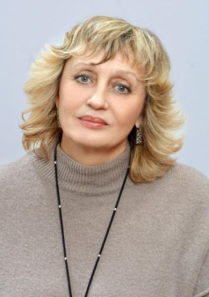

О нас
Добро пожаловать в Студенческий научный кружок кафедры общественного здоровья и здравоохранения. Наше сообщество — это пространство для молодых и амбициозных исследователей, стремящихся внести свой вклад в развитие современной медицины и системы управления здравоохранением.
Направления работы СНК:
- 1. Общественное здоровье и организация здравоохранения
- 2. История медицины
- 3. Цифровизация и систематизация здравоохранения
- 4. Санитарно-просветительная и профориентационная работа
Направления научно-исследовательской работы кафедры:
- 1. Мониторинг профессионального здоровья работников здравоохранения ЛНР.
- 2. Создание и апробация медико-социальных программ ранней профилактики профессионального выгорания и восстановления здоровья медработников.
- 3. Изучение мотивации студентов и молодых специалистов к работе в учреждениях здравоохранения региона.
- 4. Разработка и реализация корпоративных программ здорового образа жизни.
- 5. Издание методических рекомендаций, монографий и статей в рецензируемых журналах по теме профессионального долголетия медиков в регионе.
Руководство кафедры и СНК
Луговсков Алексей Дмитриевич
Заведующий кафедрой
д.мед.н., профессор

Знагован Светлана Юрьевна
Руководитель кружка
к.мед.н., доцент

Гундарь Карина Руслановна
Староста СНК

Вербич Вадим Аркадьевич
Заместитель старосты
Надоенко Данил Романович
Пресс-секретарь СНК
"Primum non nocere"
Наши достижения


Публикации
Монастырские больницы и медицинские знания в Западной Европе
Аннотация: Монастырская медицина в Западной Европе V–XV вв. выступила ключевым механизмом сохранения античного медицинского наследия, развития практики врачевания и становления организованных форм ухода за больными, заложив основы будущей европейской системы здравоохранения.
Читать полную статью (DOCX)
Медицина в киберпанковой ретроспективе: как фантастика 1950–1980-х предсказывала биоэтические кризисы
Аннотация: Научная фантастика второй половины XX века в произведениях Айзека Азимова, Филипа Дика и Уильяма Гибсона предвосхищает ключевые биоэтические дилеммы современной биомедицины — от ответственности за решения медицинского ИИ и последствий генной инженерии до кризиса идентичности в условиях киборгизации и тотальной цифровизации сознания.
Читать полную статью (DOCX)
Нестандартные фигуры в истории медицины: Фердинанд Демара и Мартин Коуни
Аннотация: На примере Фердинанда Демары и Мартина Коуни показано, что, несмотря на отдельные случаи спасения жизней, нелегитимная медицинская практика остаётся неприемлемой из-за нарушения этических, правовых и профессиональных норм.
Читать полную статью (DOCX)
Восточная медицина Древнего мира: философские основы и практики
Аннотация: Традиционная индийская и китайская медицина рассматриваются как целостные философско-медицинские системы, в рамках которых здоровье понимается как динамический баланс жизненных сил человека и его взаимодействия с природой.
Читать полную статью (DOCX)
Вклад Галена в развитии анатомии на основе вскрытия животных: влияние на медицину на 1500 лет
Аннотация: Наследие Клавдия Галена (130–210 гг. н. э.) представляет собой не просто исторический этап, а фундаментальный эпистемологический сдвиг в медицине античности. Систематизация анатомических знаний и интеграция философского дискурса в клиническую практику позволили сформировать парадигму, доминировавшую более полутора тысячелетий.
Читать полную статью (DOCX)
Присоединяйтесь к нам
Мы всегда рады новым лицам. Оставьте свои контактные данные, и руководство кружка свяжется с вами, чтобы пригласить на ближайшее заседание.
2 корпус 3 этаж, кафедра ОЗиЗ